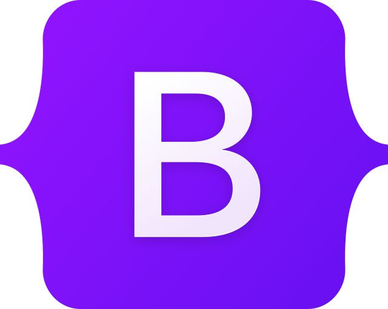

Bootstrap je jedan od najpopularnijih razvojnih alata za izradu modernih i responzivnih web stranica. Ovaj front-end okvir otvorenog koda pruža jednostavan način za kreiranje vizualno privlačnih i funkcionalnih korisničkih sučelja koristeći HTML, CSS i JavaScript. Razvijen od strane inženjera kompanije Twitter, prvi put je objavljen 2011. godine, a od tada je postao nezaobilazan resurs za web developere širom svijeta. Njegova glavna svrha je ubrzati i pojednostaviti proces razvoja, pružajući unaprijed definisane stilove i komponente koje se lako prilagođavaju različitim projektima. Jedna od ključnih prednosti Bootstrapa je njegova podrška za responzivni dizajn, što omogućava web stranicama da se optimalno prikazuju na uređajima različitih veličina ekrana, uključujući desktop računare, tablete i pametne telefone. Responzivnost se postiže korištenjem mrežnog sistema, koji se temelji na 12 stupaca i omogućava jednostavno strukturiranje elemenata unutar stranice. Ovaj sistem razvijateljima omogućava precizno određivanje rasporeda elemenata za različite veličine ekrana, čime se osigurava kvalitetno korisničko iskustvo. Bootstrap nudi bogat skup unaprijed definisanih komponenti, što značajno smanjuje vrijeme potrebno za razvoj stranice. Ove komponente uključuju navigacijske trake, forme, dugmad, kartice, liste, tabele i druge elemente koji su neophodni za izradu profesionalnog web sučelja. Uz ove komponente, Bootstrap dolazi i s JavaScript dodacima koji omogućavaju dodatnu interaktivnost na web stranici. Na primjer, pomoću ovih dodataka možete implementirati modalne prozore, alatne savjete, karusel galerije i druge funkcionalnosti bez potrebe za pisanjem složenih kôdova. Prilagodljivost je još jedna značajna karakteristika Bootstrapa. Iako okvir dolazi s unaprijed definisanim stilovima, korisnici ga mogu lako prilagoditi prema specifičnim potrebama svog projekta. Ovo se postiže korištenjem CSS varijabli ili izmjenom SASS/LESS datoteka, što omogućava izmjene boja, fontova, veličina i drugih vizualnih aspekata. Na taj način, Bootstrap omogućava kreiranje jedinstvenih dizajna koji se mogu razlikovati od njegovog osnovnog izgleda. Velika zajednica korisnika i razvijalaca doprinosi kontinuiranom razvoju i unapređenju Bootstrapa. Dokumentacija ovog alata izuzetno je detaljna i lako razumljiva, što ga čini dostupnim i početnicima u svijetu web razvoja. Osim toga, brojni online resursi, vodiči i forumi pružaju dodatnu podršku, čineći proces učenja i implementacije još jednostavnijim. Aktivna zajednica također doprinosi razmjeni ideja, dijeljenju primjera i razvoju dodatnih resursa koji obogaćuju Bootstrap ekosistem. Bootstrap nije samo alat za početnike, već ga koriste i iskusni profesionalci zbog njegove fleksibilnosti i mogućnosti brzog razvoja. Njegova modularna priroda omogućava integraciju samo onih komponenti koje su potrebne za određeni projekt, čime se izbjegava prekomjerno opterećenje stranice. Također, kompatibilnost s najnovijim verzijama preglednika osigurava da stranice izrađene pomoću Bootstrapa izgledaju i funkcioniraju besprijekorno na različitim platformama. Zahvaljujući svim ovim karakteristikama, Bootstrap je postao nezamjenjiv alat u modernom web razvoju. Njegova kombinacija jednostavnosti, fleksibilnosti i funkcionalnosti omogućava programerima da svoje ideje brzo pretvore u kvalitetne i profesionalne web stranice. Bilo da radite na manjem projektu ili na kompleksnoj aplikaciji, Bootstrap vam pruža čvrst temelj i alate potrebne za postizanje impresivnih rezultata.
